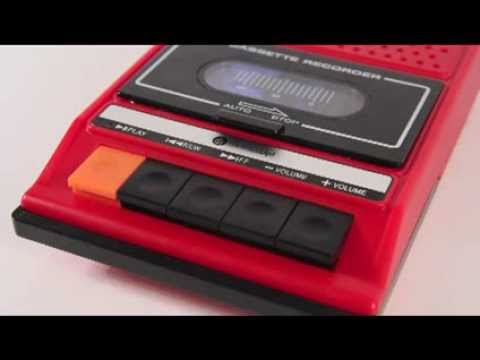
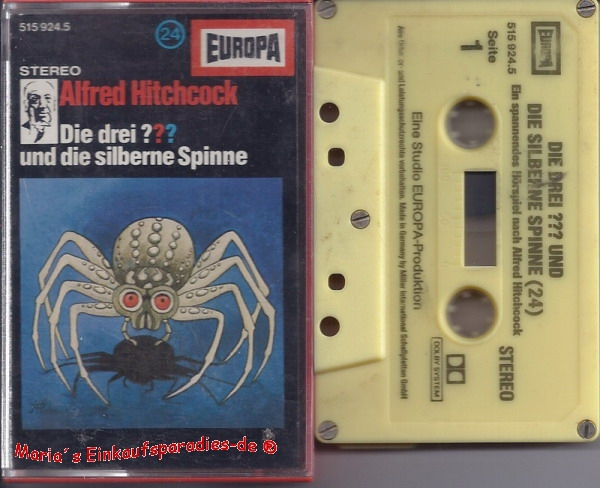

Wer bin ich ?
- Softwareentwickler seit 2007 bei Micromata
- PHP, SQL, Linux, Java, Scala, JS usw...
- Frontend und Backend
- Hardware erst seit 2 Jahren. (Carrera Bahn)
- OpenSource Fan https://github.com/tuxburner
Wieso einen MP3 Play selber bauen ?
Warum zur HÖLLE baut man einen MP3 Player selber ?

+

== HAPPY CHILDHOOD <3
Idee
- Schon seit 2007. War aber leider alles zu teuer
- MP3 Player sind entweder zu $$$ oder nicht Kids geeignet.
- Oft muss man lesen, zu viele Knöpfe, Optionen wo man was verstellen kann.
- Kassette angeschaut reingesteckt abgespielt.
- Wenige Knöpfe.
- Das Teil macht nur das was können soll. (Kein Video Krams...)
- Sollte streamen, damit man nicht andauernd mp3 draufspielen muss.
Hardware
- Soll komplett mit 5V (USB) laufen.
- Sollte ohne großes Löten gebaut werden.
- Sollte nicht teuer werden.
Parts
| Item |
Value |
| PI |
35€ |
| Display |
20€ |
| USB Lautsprecher |
10€ |
| Drehencoder |
1€ |
| Knopf |
1€ |
| Wlan |
10€ |
| Usb Netzteil (2A) |
5€ |
| Summe: |
82€ |
Software
- Wollte erst XBMC nehemen. War aber fummelig und war nicht so cool :P
- Erst JavaFX als Frontend und play mit Scala als Backend
- Als erstes JavaFX mit einem JS Frontend ersetzt.
- Backend war erst nur ein Plex Server.
- Später wurde Plex mit einem node Backend ersetzt.
- Frontend 2 Rewrites :)
Frontend
- Komplett in HTML und JS geschrieben. Platformunabhängig.
- Browser im Kiosk mode.
- Jquery, Handlebars, auiojs, bootstrap 3
- Vier Tasten Bedienung
- An Coverflow orientiert.
- Eigenes Keyboard geschrieben
Weitere Software
- pikeyd: um Tasten vom GPIO vom PI zu erzeugen
- Diverse Scripte um alles zu starten beim Booten
Herausforderungen
- Browser auf dem PI zu finden
- Node für den PI zu finden
- PI langsam
Momentaner Stand
- 3 Habe ich gebaut
- Kinder kamen sofort klar damit.
- Wenige Probleme
- Pappa das was du machst möchte ich auch mal können :)
Kommende Features
- Spotify support
- Akku Betrieb
- Backend fertig machen (Settings usw.)
- Parental App :)
- Wecker
- Zeitanzeige
- Schnellere Bootzeit
- Touch support (hammerjs)